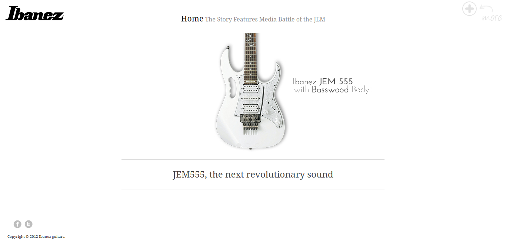

click and grab for zoom!

One of my last few projects in Temasek Polytechnic.
Created using Dreamweaver, HTML5 and developed for the subject NMM (New Media).
I always had this fascination with guitars, and music in general (I really love music!), and I really wanted to get this guitar but sadly I'm always broke. :(
But anyway, it's a mockup of a microsite for Ibanez, along with Facebook and it's twitter to 'promote' this specific model!